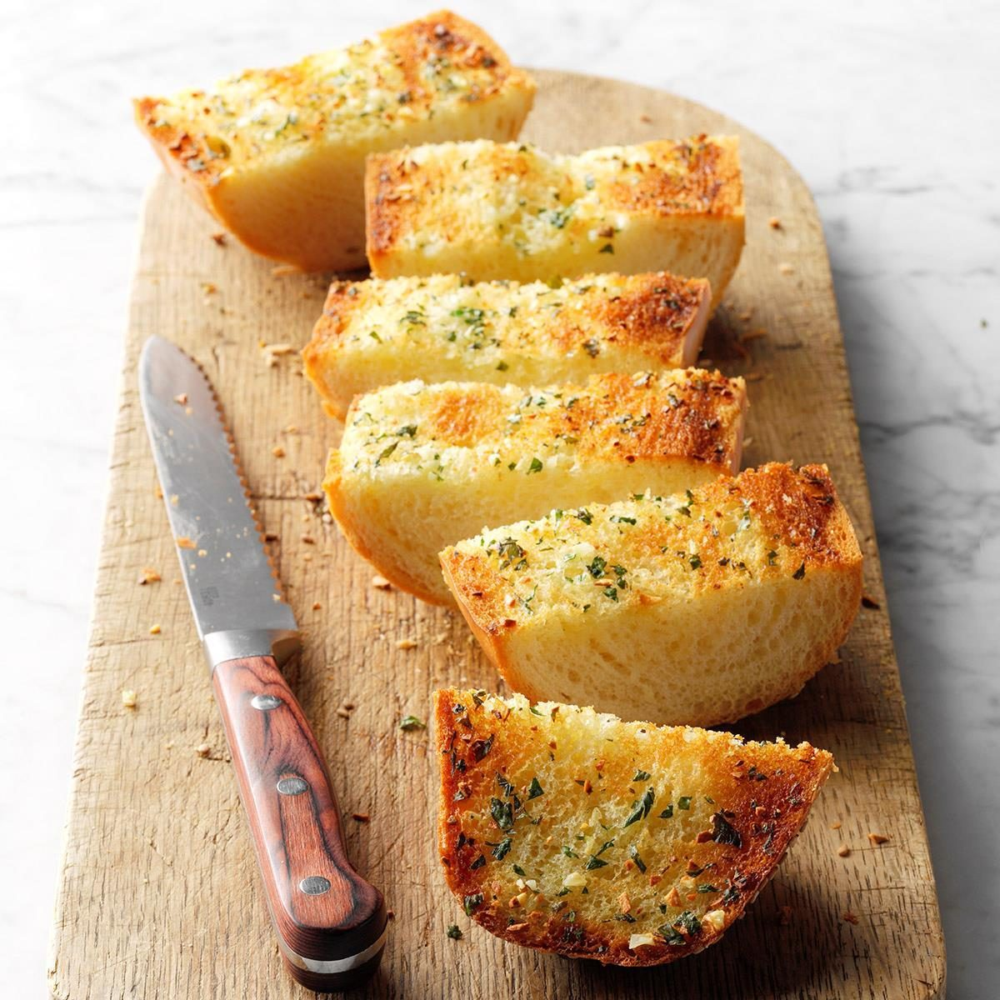

Garlic Bread

Description
Ingredients
- Any kind of firm, thin, sliced bread
- Garlic-infused olive oil
- Garlic salt
Directions
- Preheat oven to 350°F
- Place sliced bread on a baking tray lined with aluminum foil
- Generously coat bread slices with garlic-infused olive oil.
- Season with garlic salt, to taste
- Bake for 10-15 minutes until crunchy throughout.